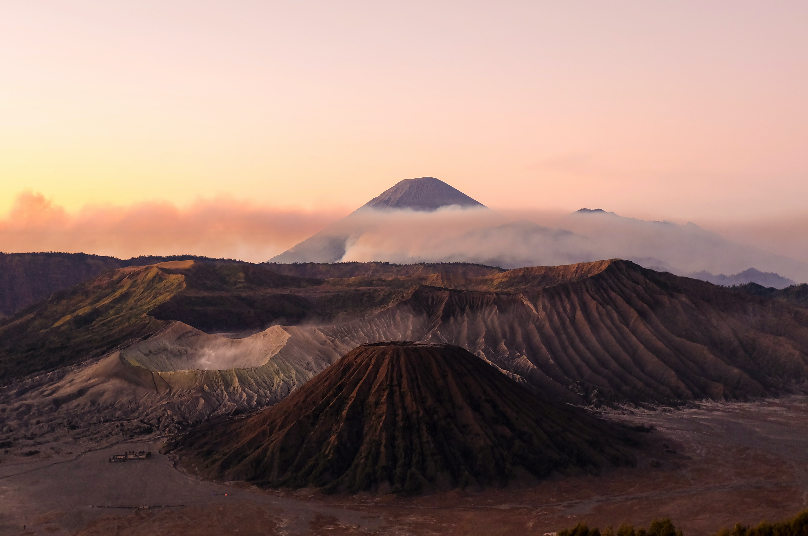
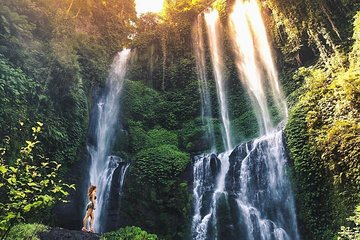
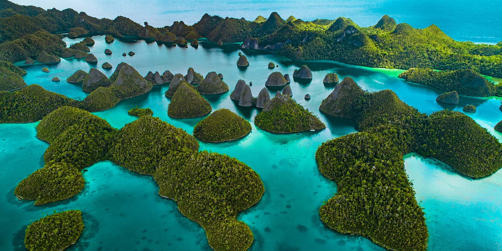
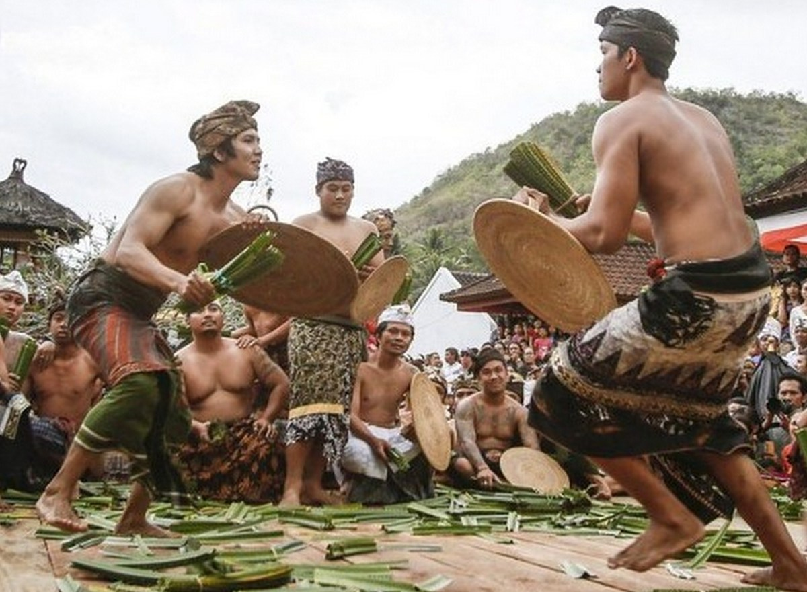
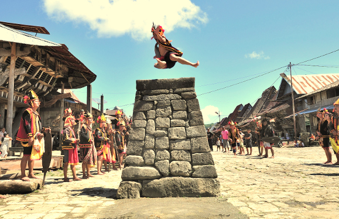

Wisata dan Budaya Indonesia

Gunung Bromo
Wisata - Jawa Timur
Wisata Gunung Bromo terletak di Jawa Timur ini memang mengundang banyak wisatawan karena keindahan pemandangan alam dari ketinggian pegunungan, nama Gunung Bromo sendiri diambil dari salah satu dewa utama dalam agama Hindu yaitu Brahma, gunung ini memiliki ketinggian 2329 meter di atas permukaan air laut. Status Gunung Bromo masih aktif membuat daya tarik tersendiri bagi wisatawan.

Air Terjun Sekumpul
Wisata - Bali
Daya tarik atau pesona objek wisata air terjun Sekumpul Buleleng ini cukup menarik minat para wisatawan untuk berada lebih dekat, bahkan agar bisa bersentuhan langsung air pegunungan tersebut. Keberadaannya terkenal sampai ke mancanegara, lokasinya cukup tersembunyi dan akses untuk menuju air terjun tersebut perlu usaha ekstra, sehingga menciptakan sensasi perjalanan petualangan trekking menyenangkan.

Raja Ampat
Wisata - Papua Barat
Raja Ampat adalah kepulauan yang terdiri dari banyak sekali pulau karang dan tersebar luas di seluruh wilayahnya. Namun demikian, Raja Ampat memiliki 4 pulau utama yang paling besar, yaitu Pulau Waigeo, Pulau Batanta, Pulau Salawati, dan Pulau Misool. Empat pulau besar inilah yang menjadi titik awal penyebaran seluruh penduduk Raja Ampat yang sebagian besar berprofesi sebagai nelayan.
Tari Piring
Budaya - Sumatera Barat
Tari piring adalah tarian tradisional yang berasal dari tanah Minangkabau tepatnya dari kota Solok provinsi Sumatra Barat. Dalam bahasa Minangkabau tarian ini sering disebut dengan Tari Piring. Karena keunikannya, sampai saat ini pertunjukan Tari Piring sangat diminati masyarakat Indonesia. Selain masyarakat lokal, turis mancanegara juga banyak yang mengagumi tarian ini karena keunikannya.

Perang Pandan
Budaya - Bali
Tradisi ini merupakan rangkaian upacara keagamaan yang dilakukan ketika upacara Sasih Sembah digelar. Upacara Sasih Sembah merupakan upacara terbesar yang diselenggarakan hanya sekali dalam setahun. Sedangkan Perang Pandan dihelat selama 2 hari mulai pukul 2 sore di halaman Balai Desa Tenganan. Kaum pria menggunakan pakaian adat madya.

Lompat Batu
Budaya - Sumatera Utara
Tradisi Lompat Batu ini biasanya dilakukan oleh para pemuda dengan cara melompati tumpukan batu dengan ketinggian 2 meter dengan tebal mencapai 40 cm, hal tersebut dilakukan untuk menunjukan bahwa mereka sudah pantas dianggap sebagai pemuda dewasa secara fisik. Menurut masyarakat di sana tradisi ini merupakan media untuk menguji ketangkasan dan kejantanan para pemuda.